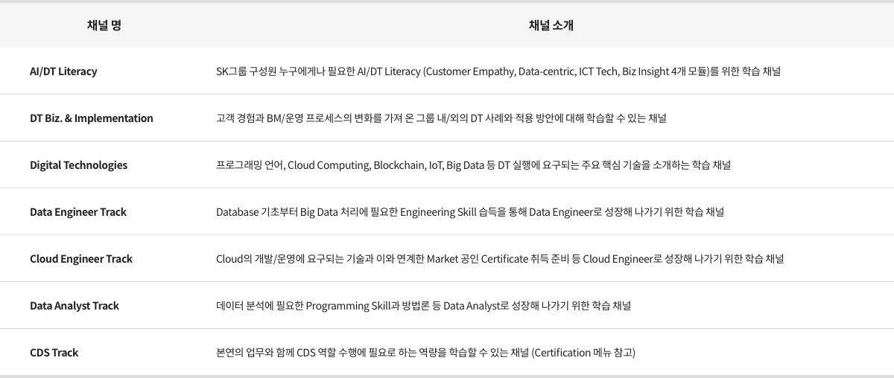

DT College
'그룹의 Deep Change는 우리 손으로!’
Digital Skill을 장착하고 고객과 업을 이해하여,
SK Deep Change를 맨 앞에서 이끌어 나가실 구성원들을 위한 과정들이,
여기 DT College에 마련되어 있습니다.
SK Deep Change를 맨 앞에서 이끌어 나가실 구성원들을 위한 과정들이,
여기 DT College에 마련되어 있습니다.

Digital Transformation이란 고객에서 출발하여 Digital 기술을 활용, 기존의 운영 프로세스와 Business Model, 나아가서는 문화/일하는 방식까지도 바꾸는 포괄적 활동이며, 우리 SK가 추구하는 Deep Change 실행의 핵심 요소로 자리매김하고 있습니다.
DT College에서는 이러한 DT 추진의 근간이라 할 수 있는 Data/Cloud를 중심으로 한 Digital 요소 기술을 학습할 수 있는 기회를 제공함은 물론, 새로운 고객 경험의 창출, BM/운영 프로세스의 혁신 및 일하는 방식의 변화를 이루어낸 다양한 국내외 Business Case들을 폭넓게 학습할 수 있습니다. 아울러 주요 Digital 기술에 대해서는 시장에서 인정받는 Certificate 취득을 지원할 수 있는 상시적인 프로그램들이 활발하게 제공되고 있습니다.

DT College에서는 이러한 DT 추진의 근간이라 할 수 있는 Data/Cloud를 중심으로 한 Digital 요소 기술을 학습할 수 있는 기회를 제공함은 물론, 새로운 고객 경험의 창출, BM/운영 프로세스의 혁신 및 일하는 방식의 변화를 이루어낸 다양한 국내외 Business Case들을 폭넓게 학습할 수 있습니다. 아울러 주요 Digital 기술에 대해서는 시장에서 인정받는 Certificate 취득을 지원할 수 있는 상시적인 프로그램들이 활발하게 제공되고 있습니다.
전체 커리큘럼
Self-directive
Intensive
Data Engineer Track
- Scala 이해와 활용
- NoSQL 이해와 활용
- Hadoop 이해와 활용
- SQL
Badge
Cloud Engineer Track
- Certification
- Cloud 기술
- Cloud 개발 기초
- Cloud 기본 (Azure)
Data Analyst Track
- Machine Learning 활용
- Data Visualization
- Data 수집/가공
- Statistics & Analytics
- 코딩 For Big Data 분석
DT Technologies
- 프로그래밍 언어 (R, Python)
- Cloud Computing
- Block chain
- IoT
- Big Data
Badge
CDS Track
(Intensive Course, 2주)
- 현업 활용 Project
- Machine Learning
- Data Visualization
- EDA 및 데이터 가공
- Data Pre-Processing
- Python 기본 문법
DT Biz. & Implementation
- Tech & Biz Talk (미래Tech포럼)
- Zoom-in Mobility Biz
- DT & BM혁신 Case Study
- 글로벌 Tech 이벤트
- SK, DT를 만나다
Badge
AI/DT Literacy
- Customer Empathy
- Data-Centric Approach
- ICT Tech 이해
- Biz Insight